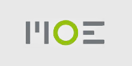
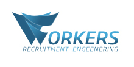

O Mnie
Nazywam się Bartłomiej Fryz, mam 21 lat, zajmuje się programowaniem od 2008 roku. Jestem aktywnym freelancerem, zdołałem zamknąć kilka projektów z których łączna pula zarobków to: 30 tys złotych.
Zajmuję się tworzeniem stron, sklepów i aplikacji internetowych. Moje projekty bazują na różnych technologiach:
Posiadam bardzo dobre doświadczenie oraz wiedzę na temat front-end / back-endu. Pracowałem w prywatnych projektach do gry Lineage 2 jako programista / administrator dla serwerów takich jak: Creed, Eternity Throne
Byłem także członkiem zespołu korporacji MOE, gdzie tworzyliśmy sieć Intranet. Pracowałem tam jako programista .NET frameworku dotNetNuke.
Portfolio



Kontakt
Bartłomiej Fryz
Brzezówka 200, 39-102 Brzezówka
Brzezówka 200, 39-102 Brzezówka